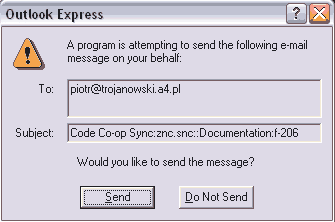
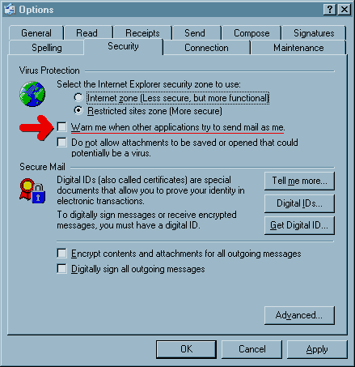

You can turn them off (the new generation of viruses doesn't bother using MAPI anyway--it uses SMTP). Go to Outlook Express Tools menu and click on Options, then select the Security tab. Deselect the box "Warn me when other applications try to send mail as me." (See picture below.)
